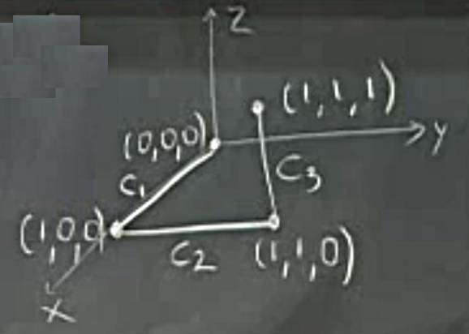

Ders 30
Çizgi Entegralleri (Line Integrals)
Diyelim ki bir vektör alanı $F = P i + Qj + Rk$ var, ve bu alan bir kuvvet alanını temsil ediyor olabilir. Aynı uzayda bir eğri $C$ var, ve bu alan içinde yapılan iş $W = \int_C \vec{F} \cdot \mathrm{d} \vec{r}$ ile hesaplanabilir. Bu tanıdık bir formülasyon tabii bir ek var, üçüncü kordinat $z$. Sonsuz küçük $\vec{r}$,
$$ \mathrm{d}\vec{r} = < \mathrm{d} x, \mathrm{d} y, \mathrm{d} z > $$
olarak gösterilebilir, ve $\vec{F}$ ile noktasal çarpım yapınca tabii ki
$$ \int_C \vec{F} \cdot \mathrm{d} \vec{r} = \int_C P \mathrm{d} x + Q \mathrm{d} y + R \mathrm{d} z $$
sonucu elde edilir. Bu hala çizgisel entegral. Üstteki gerekli değerleri soktuktan sonra temiz bir formüle dönüşecek. Metot düzlemde gördüğümüz durumla aynı, eğriyi parametrize etmenin bir yolunu bulacağız, yani $x,y,z$ değişkenlerini tek bir değişken üzerinden göstereceğiz, sonra entegrasyonu o tek değişken bağlamında yapacağız.
Örnek
$$ \vec{F} = < yz, xz, xy > $$
$$ C: x=t^3, y=t^2, z=t, 0 \le t \le 1 $$
$\mathrm{d}\vec{r}$ elde etmek için $C$ öğelerinin $t$'ye göre türevini alırız,
$$ \mathrm{d} x = 3t^2, \mathrm{d} y = 2t \mathrm{d} t, \mathrm{d} z = \mathrm{d} t $$
Nihai entegral hesabı için
$$ \int_C \vec{F} \cdot \mathrm{d} \vec{r} = \int_C yz \mathrm{d} x + xz \mathrm{d} y + xy \mathrm{d} z $$
Biraz önce bulduğumuz $\mathrm{d} x$, $\mathrm{d} y$, $\mathrm{d} z$ değerlerini üste koyarsak,
$$ = \int_C t^3 3t^2 \mathrm{d} t + t^4 2t \mathrm{d} t + t^5 \mathrm{d} t $$
$$ = \int_{0}^{1} 6 t^5 \mathrm{d} t = t^6 \big\vert_{0}^{1} = 1 $$
Yani klasik yaklaşımımı daha yüksek boyutta uyguladık.
Eğer eğri geometrik bir tarif üzerinden verilmiş ise onu nasıl parametrize edeceğimize kendimizin karar vermesi lazım. Parametrize etmek için en iyi değişken nedir? Üstte gördüğümüz gibi bu parametre bir zamanımsı $t$ değişkeni olabilir, ya da, kordinatlardan biri olabilir, yani $x,y,z$ değişkenlerinden biri. Mesela üstteki örnekte $z$ de kullanabilirdim, o zaman eğri $x=z^3$, $y=z^2$ olurdu (tabii ki $z=z$). Acıları da kullanılabilir, üstteki örnekte değil ama eğer hareket bir çember, elips etrafında olsaydı bunu yapabilirdim.
Örnek
Aynı vektör alanı $F$ ama bu sefer $C$ alttaki gibi,

Nihai entegral üç parça halinde yapılmalı, $\int_C = \int_{C_1} + \int_{C_2} + \int_{C_3}$.
$C_1,C_2$ icin $z=0$ v $\mathrm{d} z = 0$ cunku bu egri $xy$ duzleminde, o zaman
$$ \int yz \mathrm{d} x + xz \mathrm{d} y + xy \mathrm{d} z = 0 $$
$C_3$ icin $x=1,y=1$ ve $\mathrm{d} x = 0, \mathrm{d} y = 0$.
$$ \int_{C_3} \vec{F} \cdot \mathrm{d} \vec{r} = \int_{C_3} xy \mathrm{d} z = \int_{0}^{1} \mathrm{d} z = 1 $$
O zaman tüm entegral şöyle,
$$ \int_C = \int_{C_1} + \int_{C_2} + \int_{C_3} = 0 + 0 + 1 = 1 $$
Şimdi ilginç bir nokta, eğer aynı nihai noktaya farklı bir eğri üzerinden erişsek o eğri üzerinden hesaplanan çizgi entegrali aynı sonucu verir. Bu durum aslında $F$'nin bir gradyan alanı, yani muhafazar olması ile alakalı. Eğer bir alan gradyan alanı ise, aynen basit türevlerde olduğu gibi, Calculus'un Temel Teorisi geçerlidir, türevin yol üzerindeki entegrali tümlenen fonksiyonun başlangıç ve bitiş arasındaki farkına eşittir,
$$ \int_C \nabla \cdot \mathrm{d} \vec{r} = f(P_1) - f(P_2) $$
Peki $\vec{F} = < yz, xz, xy >$ alanının bir gradyan alanı olduğundan emin miyiz? Bu alana gradyan alarak erisebileceğimizi biliyoruz, bir tahmin yaparsak mesela $\vec{F} = \nabla (xyz)$ ile bunu yapabilirdik.
[devam edecek]
Yukarı